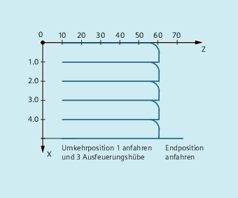

Bei dieser Art des Pendelns ist nur an den Umkehrpunkten bzw. innerhalb definierter Umkehrbereiche eine Zustellbewegung zugelassen.
Je nach Anforderung kann die Pendelbewegung während der Zustellung fortgeführt oder angehalten werden, bis die Zustellung vollständig ausgeführt ist.
Vor dem Bewegungssatz, der die Zuordnung von Zustell- und Pendelachse sowie die Festlegung der Zustellung enthält, sind die Parameter für das Pendeln festzulegen (siehe "Asynchrones Pendeln (OS, OSP1, OSP2, OST1, OST2, OSCTRL, OSNSC, OSE, OSB)").
| Position des Umkehrpunkts 1 |
| Position des Umkehrpunkts 2 |
| Haltezeit in Umkehrpunkt 1 in Sekunden |
| Haltezeit in Umkehrpunkt 2 in Sekunden |
| Vorschub der Pendelachse |
| Setz- bzw. Rücksetzoptionen |
| Anzahl der Ausfeuerungshübe |
| Endposition |
| Achse für das Pendeln freigeben |
Über Synchronbedingungen erfolgt:
Zustellung unterdrücken, bis sich die Pendelachse innerhalb eines Umkehrbereichs (ii1, ii2) oder an einem Umkehrpunkt (U1, U2) befindet.
Pendelbewegung während der Zustellung im Umkehrpunkt anhalten.
Pendelbewegung nach beendeter Teilzustellung wieder starten.
Start der nächsten Teilzustellung festlegen.
| wenn…, dann… |
| immer wenn…, dann… |
Pendel- und Zustellachse zuordnen:
OSCILL[<Pendelachse>]=(<Zustellachse 1>,<Zustellachse 2>,<Zustellachse 3>)Gesamt- und Teilzustellung festlegen:POSP[<Zustellachse>]=(<Endpos>,<Teillänge>,<Modus>)
| Zustellachse(n) der Pendelachse zuordnen |
| Gesamt- und Teilzustellungen festlegen (siehe Kapitel Datei- und Programmverwaltung) |
| Endposition für die Zustellachse, nachdem alle Teilzustellungen abgefahren sind. |
| Größe der Teilzustellung am Umkehrpunkt/Umkehrbereich |
| Aufteilung der Gesamtzustellung in Teilzustellungen = zwei gleich große Restschritte (Voreinstellung); = alle Teilzustellungen gleich groß |
Im Umkehrpunkt 1 soll keine Zustellung erfolgen. Beim Umkehrpunkt 2 soll die Zustellung bereits im Abstand ii2 vor dem Umkehrpunkt 2 erfolgen und die Pendelachse im Umkehrpunkt nicht auf das Beenden der Teilzustellung warten. Die Achse Z ist Pendelachse und die Achse X Zustellachse.
| Programmcode | Kommentar |
|---|---|
| DEF INT ii2 | ; Variable für Umkehrbereich 2 definieren |
| OSP1[Z]=10 OSP2[Z]=60 | ; Umkehrpunkt 1 und 2 definieren |
| OST1[Z]=0 OST2[Z]=0 | ; Umkehrpunkt 1: Genauhalt feinUmkehrpunkt 2: Genauhalt fein |
| FA[Z]=150 FA[X]=0.5 | ; Vorschub Pendelachse Z, Vorschub Zustellachse X |
| OSCTRL[Z]=(2+8+16,1) | ; Pendelbewegung abschalten im Umkehrpunkt 2; nach Restweglöschen Ausfeuern und Endposition anfahren; nach Restweglöschen entsprechende Umkehrposition anfahren |
| OSNC[Z]=3 | ; Ausfeuerungshübe |
| OSE[Z]=70 | ; Endposition = 70 |
| ii2=2 | ; Umkehrbereich einstellen |
| WAITP(Z) | ; Erlaube Pendeln für Z-Achse |
| Programmcode | Kommentar |
|---|---|
| WHENEVER $AA_IM[Z]<$SA_OSCILL_REVERSE_POS2[Z] DO $AA_OVR[X]=0 $AC_MARKER[0]=0 | ; Immer wenn die aktuelle Position der Pendelachse Z im MKS kleiner als der Beginn des Umkehrbereichs 2 ist, dann setze den axialen Override der Zustellachse X auf 0% und den Merker mit dem Index 0 auf den Wert 0. |
| WHENEVER $AA_IM[Z]>=$SA_OSCILL_REVERSE_POS2[Z] DO $AA_OVR[Z]=0 | ; Immer wenn die aktuelle Position der Pendelachse Z im MKS größer gleich der Umkehrposition 2 ist, dann setze den axialen Override der Pendelachse Z auf 0%. |
| WHENEVER $AA_DTEPW[X]==0 DO $AC_MARKER[0]=1 | ; Immer wenn der Restweg der Teilzustellung gleich 0 ist, dann setze den Merker mit dem Index 0 auf den Wert 1. |
| WHENEVER $AC_MARKER[0]==1 DO $AA_OVR[X]=0 $AA_OVR[Z]=100 | ; Immer wenn der Merker mit dem Index 0 gleich 1 ist, dann setze den axialen Override der Zustellachse X auf 0%. Damit wird eine zu frühe Zustellung verhindert (Pendelachse Z hat den Umkehrbereich 2 noch nicht wieder verlassen, die Zustellachse X ist aber bereit für eine erneute Zustellung). Setze den axialen Override der Pendelachse Z von 0% (Aktion der 2. Synchronaktion) zum Verfahren wieder auf 100%. |
| Programmcode | Kommentar |
|---|---|
| OSCILL[Z]=(X) POSP[X]=(5,1,1) | ; Starten der Achsen; Der Pendelachse Z wird die Achse X als Zustellachse zugewiesen.; Die Achse X soll bis Endposition 5 in Schritten von 1 fahren. |
| M30 | ; Programmende |
Siehe auch:
Über Synchronaktionen gesteuertes Pendeln (OSCILL): Weitere Informationen